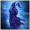
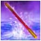
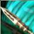
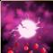

-
客服：949407542
要诀
来源： 日期：2014-10-8 19:58:32要诀：调虎离山 使用教会你调虎离山技能，45级以上学习了心法易筋经的少林弟子可以学习。 要诀：易筋锻骨 少林第一绝学易筋经中所载的神功。使用之后可以提升你的血上限并回复大量血。 要诀：纯阳无极 天下武学至宝九阳真经中所载的神功。使用之后可以提升你的火属性伤害和抗火能力。 要诀：棒打狗头 使用教会你棒打狗头技能，45级以上学习了心法打狗棒法的丐帮弟子可以学习。 要诀：天下无狗 丐帮绝世神功打狗棒法中的绝招。使用之后可以对近身多个敌人发动灭顶一击。 要诀：天外飞仙 月圆之夜，紫禁之巅，一剑西来，天外飞仙。使用之后可以对目标发动完美的一击，造成巨大的玄伤害，并使其陷入麻痹状态。 要诀：清心普善咒 使用教会你清心普善咒技能，45级以上学习了九阴天书的峨嵋弟子可以学习。 要诀：九阴神爪 天下武学至宝九阴真经中所载的神功。使用之后可以对目标发动穿心刺骨的一击，并使其陷入流血状态。 要诀：化骨绵掌 江湖上谈之色变的神功，化功大法中的绝技。使用之后可以对目标发动腐筋蚀骨的一击，并使其力量和灵气降低。 要诀：少泽剑 天下第一剑法六脉神剑中最灵活的一剑。使用之后可以对目标发动石破天惊的一击，并使其陷入破绽状态。 要诀：同生共死 令江湖人士闻风丧胆的生死符绝学。使用之后可以对目标发动求生不得，求死不能的一击，并使其陷入封穴状态。但你会因此损失一定的血。 要诀：鲲跃北溟 北冥神功中最具杀伤力的一击。使用之后可以对目标发动吞噬天地的一击，对其气血造成大量伤害，并使部分伤害转化为自己的气血。 要诀：商阳剑 六脉神剑中最凶猛的一剑，中剑者的经脉会被剑劲所噬，若不疾走将剑劲散出，将受到极大损伤。  要诀：仙风道骨 将先天真气汇聚于丹田，隐约进入升仙状态，短时间提升自己的内功防御。  要诀：定海神针 根据传说中的东海之宝，研究出的陷阱。靠近者会感受到东海凶猛波涛的威力。 要诀：天地明灭 天山神技，以超绝的速度，将自己与目标互换位置。 要诀：烽火连城 九阳天书中秘载的绝技，用烈火灼乱敌人心智，使用之后可以将敌人眩晕并将其拉到自己身边。 要诀：含笑半步 星宿最强的毒功，吞噬中毒者的功力。中毒者会间歇的受到封穴效果。 要诀：慈航普度 少林第一绝学易筋经中所载的神功。使用之后可以替目标承担伤害。 要诀：中冲剑 大理段氏的武功传世绝学，运功后以右手中指点穴，出指可缓可快。与敌挣搏凶险之际，用此指法可破坏敌之抗性平衡，实为克敌保身的妙术。 要诀：怒火连斩 九阳天书中秘载的绝学，使用后越战越勇，造成伤害递增，并可在攻击中提高自身的移动速度。  要诀：横扫乾坤 丐帮绝世神功打狗棒法中的霸道招式，冲入敌阵后使用，如入无人之境。 要诀：七星聚 武当绝技之一，是林灵素道长的得意功夫。使用之后可对多个敌方目标造成伤害并陷入麻痹状态。  要诀：春花秋月 峨嵋绝技之一，是孟青青掌门的得意功夫。即可回复友方目标的血，也可对敌方目标造成伤害。 要诀：一日丧命散 星宿最阴毒的毒药。中毒者会给自己的盟友带来一片混乱。 要诀：冰凝霜华 天山神技，制敌于不知不觉之间。使用之后可以使你的目标陷入冷冻状态。只有在隐身状态下才能使用。 要诀：步步生花 逍遥绝技之一，是苏星河先生的得意功夫。使用之后可以在一段时间内连续在脚下自动释放伤害陷阱。 要诀：凌神式 星璇剑典所记载的强大秘技，凝神追击，与其说是剑法，不如说是身法。瞬间移动到目标身边并对目标造成伤害。 要诀：化气式 天下武学至宝星璇剑典中所载的神功。使用后化气为形，能使用出其它门派的绝学。 要诀：破天式 星璇剑典秘技，剑气充溢全身，破天而出，能对周围单位造成伤害。
豪侠天龙 版权所有 COPYRIGHT 2014-2017 FEIYANGST.COM ALL RIGHTS RESERVERD.
湘ICP备12013866号-1 《网络文化经营许可证》编号：浙网文[2011]0560-065号 | 增值电信业务经营许可证：浙B2-20110064 | 文网游备字：[2011]C- RPG152号 | 京新出音[2012]86号
健康游戏忠告：抵制不良游戏，拒绝盗版游戏，注意自我保护，谨防受骗上当，适度游戏益脑，沉迷游戏伤身，合理安排时间，享受健康生活
本游戏适合18周岁以上人群